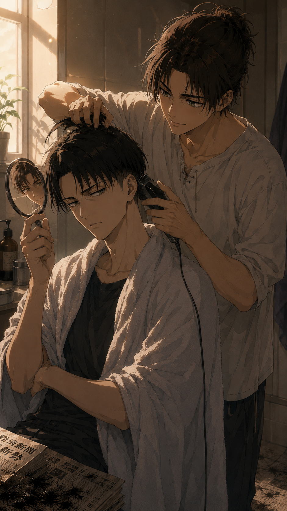

A Matter of Trust

Sunday mornings had always followed the same routine.
Tea.
A load of laundry.
Fresh sheets if he was feeling particularly ambitious.
And, also...
His undercut.
Levi had been maintaining it himself for years.
It was quicker than explaining to a barber exactly how short he wanted it, and considerably less irritating than making small talk for twenty minutes. He trusted his own hands. Today, however... His left shoulder had other ideas.
Levi stood in front of the bathroom mirror, clippers in one hand, the other arm lifting just high enough to reach the back of his head before a sharp pull shot through his shoulder.
He stopped immediately.
"...Tch."
He waited a few seconds.
Tried again.
The result was exactly the same.
He lowered his arm with a quiet sigh.
The injury itself wasn't particularly serious.
He'd strained something a few days earlier while helping Hanji move a bookshelf that had apparently weighed as much as a small car.
According to them, it had been "totally worth it."
Levi disagreed. Especially now.
He leaned closer to the mirror, turning his head from one side to the other.
The sides had grown out just enough to lose their shape.
Another week, maybe two...
And he'd start looking less like himself and more like an exceptionally well-behaved llama.
Absolutely not.
There had to be another solution. Levi stared at his reflection for another long moment. He could still pretend everything was under control. Probably.
The bathroom door slid open before he could convince himself of that.
Eren wandered in, still barefoot, one hand wrapped around a steaming mug while the other lazily rubbed the sleep from his eyes. His hair was an absolute disaster.
Levi resisted the urge to comment. Or bite.
Barely.
"Morning."
Levi answered with a distracted hum, still examining the increasingly questionable state of his undercut.
Eren took one sip of his coffee before his eyes drifted toward the clippers resting on the sink.
Then to Levi.
Then back to the mirror.
It took him all of three seconds.
"...You can't trim it."
Levi said nothing. Which, unfortunately, was answer enough.
Eren's expression changed almost immediately.
Not concern, no. Worse.
Excitement.
Genuine, barely-contained excitement.
"Can I do it?"
Levi looked at him through the mirror.
"No."
"Why not?"
"Because I enjoy having hair."
Eren placed his mug on the counter with exaggerated care, as though preparing for a negotiation.
"Levi..."
"No."
"I've watched you do it dozens of times."
"Exactly."
"That's supposed to help my case."
"It doesn't."
Eren folded his arms, trying—and failing—to hide the smile tugging at the corners of his mouth.
Levi knew that smile.
It was the same one Eren wore every single time his fingers absentmindedly disappeared into the freshly trimmed undercut afterwards.
Which only made Levi even more suspicious.
"You're smiling."
"I am."
"That's exactly why you're not touching my hair."
Eren pressed his lips together in an obvious attempt to look innocent.
"I was just thinking..."
"No."
"You don't even know what I was going to say."
"I don't need to. I know you enough."
A beat of silence.
Eren's grin widened anyway.
"...A tiny little lightning bolt?"
Levi stared at him.
"Absolutely not."
"Just one."
"No."
"A racing stripe?"
"Eren."
"A shark track?"
Levi closed his eyes.
Of course.
Ever since Eren had confessed, with complete sincerity, that owning the infamous pista do tubarão had been his greatest childhood dream, every vaguely hair-related conversation somehow ended here.
Apparently, shaving decorative patterns into Levi's undercut was simply the adult version of the same fantasy.
"Relâmpago McQueen is not going anywhere near my head."
"Why not?"
"Because I said so."
"You already look like Tubarão anyway."
Levi slowly turned to look at him.
"...Excuse me?"
"Come on. If I only shave the track, you'll do the shark part all by yourself. A baby shark."
Levi stared at him for a long, silent moment.
"...Get out."
Eren laughed so hard he had to grab the doorframe to steady himself.
It took another ten minutes.
Ten minutes of bargaining.
Ten minutes of promises.
Ten minutes of Eren swearing, hand over his heart, that he would behave like a perfectly responsible adult.
Levi believed approximately none of it.
Unfortunately...
His shoulder still hurt.
And the llama wasn't getting any less llamatic.
With the deepest sigh a man could physically produce, Levi disappeared into the bathroom. He returned a moment later with a large bath towel draped around his shoulders and an old newspaper tucked beneath one arm. Kneeling on the floor, he carefully spread the pages open in front of the sink.
Experience.
Tiny hairs had an almost supernatural ability to end up absolutely everywhere, and he had no intention of spending the rest of his Sunday finding them between the tiles.
Only once everything was in place did he pick up the clippers and hold them out. Eren accepted them with far more reverence than the occasion deserved.
"I'm trusting you."
Levi's eyes narrowed immediately.
"No."
"...No?"
"I'm settling."
Eren laughed.
"That's fair."
Levi turned around and lowered himself onto the closed toilet seat, facing the tiny mirror he decided to use to spy on his lover.
He caught Eren's reflection standing behind him, clippers in one hand, looking almost suspiciously excited.
Their eyes met in the mirror.
"Remember."
"No Lightning McQueen."
"No Lightning McQueen."
"No shark track."
"...No shark track."
Levi watched him for another second.
Then, finally...
He nodded.
"Go on."
To Levi's surprise,
Eren didn't immediately prove him right.
The clippers buzzed softly to life.
Their familiar vibration echoed through the small bathroom as Eren carefully rested one hand against the back of Levi's head, steadying him before making the first pass.
Slow.
Careful.
Much to Levi's annoyance...
He actually knew what he was doing.
Not a single tug.
Not a single uneven line.
Every movement was deliberate, patient enough that Levi found himself relaxing despite every intention not to.
He caught Eren's reflection in the mirror only once. His tongue was caught lightly between his teeth in concentration. Levi looked away before the sight could make him smile.
Maybe...
Just maybe...
He'd misjudged him.
The buzzing continued for another minute.
Then...
Silence.
Levi waited. One second. Two. Three.
The clippers never started again.
Instead...
Warm fingertips wandered lazily across the freshly trimmed nape of his neck. Back and forth.
Slow little scratches that barely grazed his skin before disappearing into the short hair at the base of his neck.
Levi closed his eyes for half a heartbeat.
Then opened them again.
"...Eren."
Another absentminded scratch.
"Hm?"
"Have you stopped cutting my hair?"
A thoughtful pause.
"...Maybe."
Levi let out the smallest sigh, but smiled despite trying not to.
"Are you seriously petting me?"
Eren smiled, completely unashamed.
"Your undercut is soft."
"...It's hair."
"It's your hair."
Levi rolled his eyes.
There really was no arguing with him.
Another slow pass of Eren's fingertips swept across the freshly trimmed side of his head before he reluctantly picked the clippers back up.
"Happy?"
"Very."
The buzzing resumed.
This time, Levi barely paid attention to it.
The initial tension had quietly dissolved somewhere between Eren's ridiculous obsession with his undercut and the gentle way he kept steadying his head with one hand before every pass.
He'd expected impatience. Maybe a lopsided haircut that would haunt him for the next fortnight.
Instead...
Eren was treating the task with almost alarming seriousness.
Every so often, he'd lean in just a little closer, squinting at the mirror before making another careful adjustment.
His tongue even found its way between his teeth again.
Levi pretended not to notice.
The moment the clippers stopped, however...
So did Eren's concentration.
His fingers were back almost immediately. Gentle scratches along the nape of Levi's neck, slow circles just beneath the freshly trimmed hairline. Another absentminded stroke along the side of his head. It happened so naturally that Eren didn't even seem aware he was doing it anymore.
"...You're doing it again."
Eren's hand froze for exactly half a second.
"...Am I?"
Then, almost sheepishly...
"Sorry."
Eren finally let his hand fall away.
Levi reached out before it could fall very far.
His fingers closed gently around Eren's hand.
Eren looked at him, puzzled.
Levi didn't say anything.
He simply lifted Eren's hand and pressed a light kiss against the back of it.
Barely more than the brush of warm lips.
"Thank you."
Eren stared at him for a heartbeat.
Then his entire face softened.
"You're welcome."
Together, they folded the towel, shook the tiny hairs onto the newspaper and tidied the bathroom until there wasn't a trace of the haircut left behind. Only when everything had been put away did Levi brush the back of his own neck with the palm of his hand.
Tiny hairs.
Everywhere.
"...Shower."
Eren laughed.
"Yeah, I probably got half of them down your shirt."
"You definitely did."
Eren followed him to the shower without another word.
The bathroom door clicked shut behind them.
The apartment grew quiet again.
Sometime later...
The sound of laughter drifted faintly through the door.
Followed by silence.
It turned out trusting Eren with his hair had been far less terrifying than Levi had imagined, and removing the tiny hairs only took a few minutes...
...Thanking Eren properly took considerably longer.